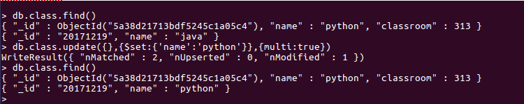

增删改查
插入数据
格式：
db.集合名称.insert(document)
插入文档时，如果不指定_id参数，MongoDB会为文档分配一个唯一的ObjectId
不指定_id参数
db.class.insert({"name":"python1","classroom":314})
指定_id参数
db.class.insert({_id:'20171219',name:"python2","classroom":"314"})
更新数据
语法
db.集合名称.update(
<query> ,<update>,{multi: <boolean>}
)
参数query: 查询条件，类似sql语句update中where部分
参数update: 更新的内容
参数multi:可选，默认是false，表示只更新找到的第一条记录，值为true表示把满足条件的文档全部更新
全文档更新
指定属性更新，通过操作符$set：
multi 设置成true，表示修改全部匹配上的。
db.class.update({},{$set:{'name':'python'}},{multi:true})

保存数据
语法
db.集合名称.save(document)
如果文档的_id已经存在则修改，如果文档的_id不存在则添加
存在则修改：
不存在则添加
删除数据
db.集合名称.remove(
<query>,{justOne: <boolean>}
)
参数query:可选，删除的文档的条件
参数justOne:可选，如果设为true或1，则只删除一条，默认false，表示删除多条 删除一条
db.class.remove({"classroom":325},{justOne:true})
可以看出两条数据只删除了第一条：

把删除的数据重新加回来再将justOne设置成false，查看结果
删除整个集合的文档：
一个空大括号，表示匹配全部
db.class.remove({})
创建集合是size：设置了szie参数后不能删除内容，只能由mongodb自己覆盖清除，
使用场景：保存日志
db.createCollection(class,{capped:true,szie:10})
插入数据 db.class,insert(name:扁鹊,age:15) db.class.find()
删除报错：

Mongodb查询
方法find()：查询
db.集合名称.find({条件文档})
方法findOne()：查询，只返回第一个
db.集合名称.findOne({条件文档})
方法pretty()：将结果格式化
db.集合名称.find({条件文档}).pretty()
比较运算符
等于，默认是等于判断，没有运算符
小于$lt
小于或等于$lte
大于$gt
大于或等于$gte
不等于$ne
查询演练
构造查询数据
db.hero.insert({name:'亚瑟',age:18,gender:1})
db.hero.insert({name:'韩信',age:24,gender:1})
db.hero.insert({name:'赵云',age:18,gender:1})
db.hero.insert({name:'武则天',age:13,gender:0})
db.hero.insert({name:'嬴政',age:13,gender:1})
db.hero.insert({name:'妲己',age:25,gender:0})
查询年龄小于15的英雄
db.hero.find({age:{$lt:15}})
查询年龄小于等于18岁的英雄
db.hero.find({age:{$lte:18}})
查询年龄大于18的英雄
db.hero.find({age:{$gt:18}})
查询年龄不等于18的英雄
db.hero.find({age:{$ne:18}})
查询“妲己”的信息并格式化输出
逻辑运算符
查询时可以有多个条件，多个条件之间需要通过逻辑运算符连接
逻辑与 逻辑与不需要标识符，直接使用，将两个条件分开就是逻辑与的关系
逻辑或 $or 条件为一个数组，数组中为单独一个条件
查询年龄为13，并且是男性的英雄
db.hero.find({age:13,gender:1})
逻辑或查询年龄大于18，或者gender为0的英雄
db.hero.find({$or:[{age:{$gt:18}},{gender:0}]})

范围运算符
$in 判断是否在条件里面 $nin 判断不在里面
查询age为13,18的英雄
db.hero.find({age:{$in:[13,18]}})
查询age不是13,18的英雄
db.hero.find({age:{$nin:[13,18]}})
limit skip 的使用
limit 读取指定文档数
skip 跳指定数量的文档
获取2条文档
db.hero.find().limit(2)
跳过两条文档后获取2条文档内容：
db.hero.find().limit(2).skip(2)
排序sort
db.集合名称.find().sort({字段:1,...})
参数1为升序排列 参数-1为降序排列
查询hero表英雄以年龄升序排列
db.hero.find().sort({age:1})
先根据性别降序，再根据age升序
db.hero.find().sort({gender:-1,age:1})
count统计查询结果的文档数
查询一共有多少个年龄为13的英雄
db.hero.find({age:13}).count()
指定返回字段结果集
db.集合名.find({条件},{字段：1，_id:0})
将字段设置为1，表示需要返回结果集
设置成0，表示不返回
_id：默认返回，如果不需要返回结果集必须手动设置成0，其他字段默认为0
查询hero英雄表，返回name,age,其他不用返回
db.hero.find({},{name:1,age:1,_id:0})